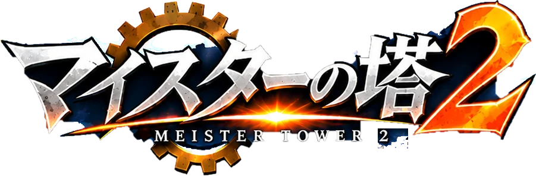
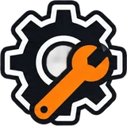
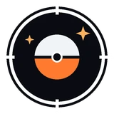

第1章「夜の工房に灯る」
はじめから

はじめる
セーブを消す
出撃
工房
編成
図鑑

ガチャ
メニュー
ガチャ
OK
⟲ 左に回す
右に回す ⟳
仕上げる
仕上げる
図鑑
工房
編成
ホーム
ガチャ
図鑑
主人公
塔の各層で、お助け仲間が手を貸してくれます。
ウルフで始める
夜の工業の街
ホームへ
画面をなぞって歩く・人をタップで話す・扉で工房・
門で塔へ
◀ ホーム
マイスターの塔
◀ 町へ
古い工房
◀ あとで
三面図
仕上げる
Lv1
0:00
II
HP
レベルアップ！
だれを強くする？
ひと休み
つづける
ホームへ帰る
素材は全部持ち帰る
✕
タップで次へ ▶
縦向きで遊んでください
画面を縦にすると、つづきから遊べます
 夜の工業の街
夜の工業の街 マイスターの塔
マイスターの塔 古い工房
古い工房